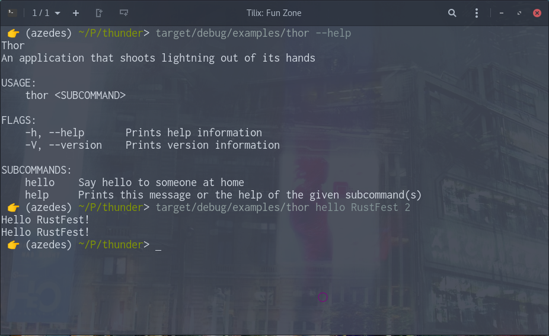

Rust 💖 C/C++
A memory-violating love story
unsafe a lotextern "C" declares an ABI in both directions#[no_mangle] to preserve the function name as-is 👉 (rayya) my_proj> ls headers/
reverse-rs.h
👉 (rayya) my_proj> cat headers/reverse-rs.h
// Safely reverse a unicode string
const char *reverse(const char *in);
struct Thor;
/// An application that shoots lightning out of its hands
#[thunderclap(drunk: bool: "Thor drinks a lot")]
impl Thor {
/// Say hello to someone
fn hello(name: &str, times: Option<u128>) { /* ... */ }
/// I...I can totally jump that far
fn no_argument() { println!("Drunk: {}", Self::drunk()); }
}
fn main() {
Thor::start();
}proc_macroself (yet)